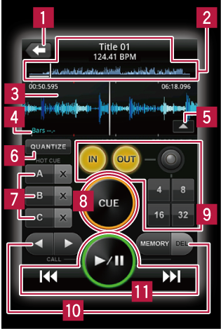

rekordbox-Felder
Player-Feld

Dient zum Zurückkehren zur darüberliegenden Ebene (Browser-Feld).
Titel, BPM und gesamte Wellenform-Anzeige
Vergrößerte Wellenform-Anzeige
 Die Beat-Positionen, die bei der Analyse der Musikdatei erkannt wurden, werden als graue Punkte oben und unten in der vergrößerten Wellenform-Anzeige dargestellt.
Die Beat-Positionen, die bei der Analyse der Musikdatei erkannt wurden, werden als graue Punkte oben und unten in der vergrößerten Wellenform-Anzeige dargestellt.
Zählt die Anzahl der Takte zum nächsten Cue oder Loop herunter.
- Die Anzahl der Takte wird wird links vom Punkt angezeigt, und die Anzahl der verbleibenden Takte rechts.